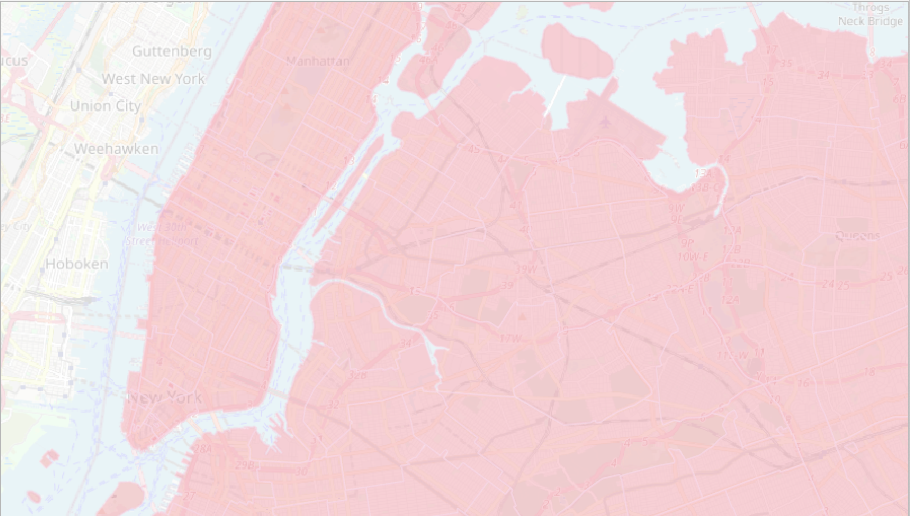
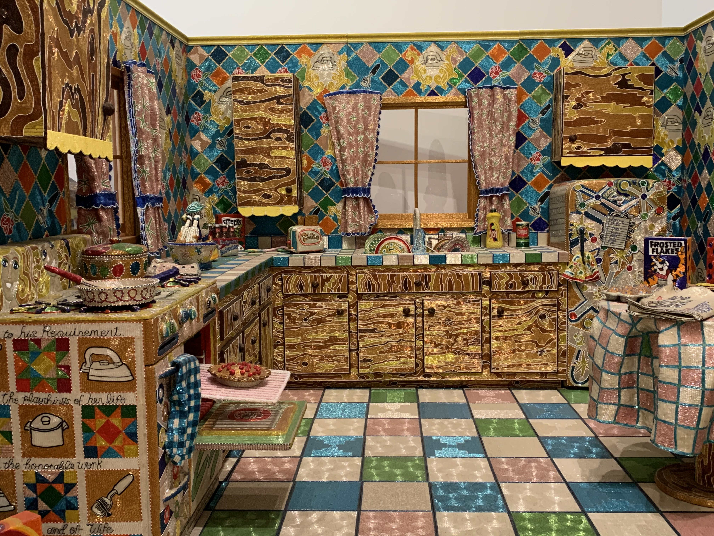
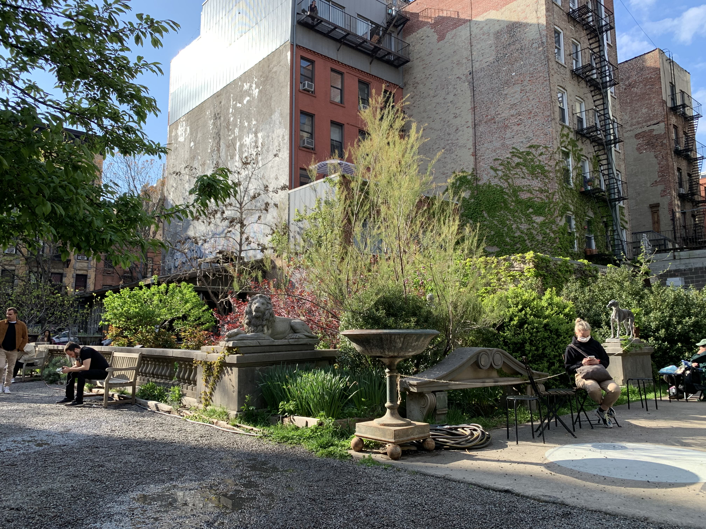
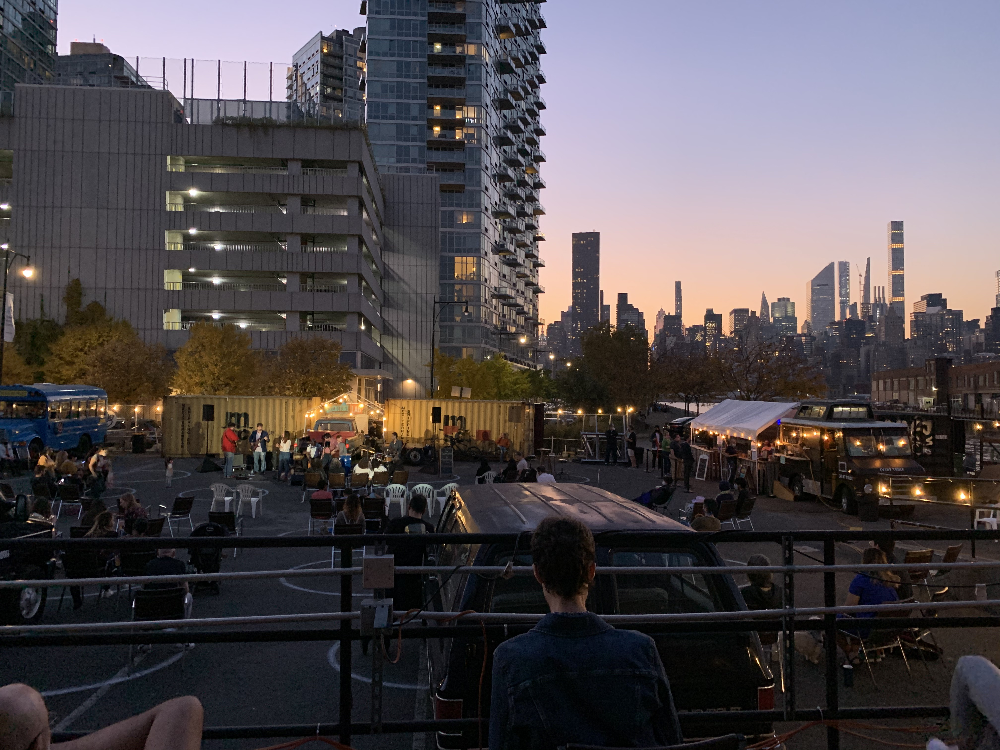
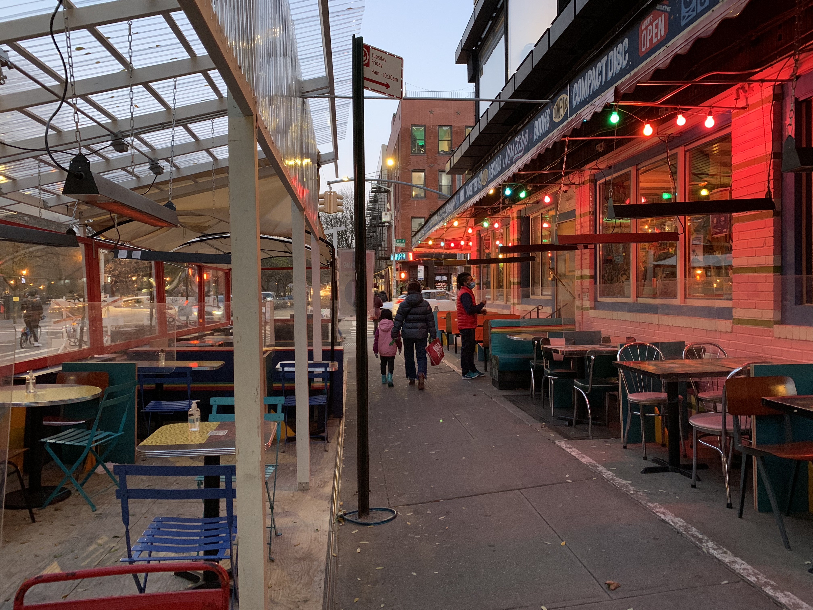

TK Lede in with something specific about tourism being the main drive of the city’s economy; ways it feels alive
Last month, Mayor Bill de Blasio presented his $98.6 billion “Recovery Budget” for the Fiscal Year 2022, the largest budget in the city’s history, with its aim to drive the city’s comeback after being decimated by the
pandemic. “With the Recovery Budget, New York City will emerge from this challenge stronger, fairer, cleaner, greener and safer than ever,” he announced on April 26th.
The budget outlines various sectors it would invest in to support New York City’s “comeback” by investing in working families and driving the city’s economic growth. TK Line summarizing the importance of tourism and
sustainable city from Center for Urban Futures De Blasio proposed $25 million to “launch Largest Tourism Campaign in History with NYC&Co,” over $12 million to expand Open Streets and outdoor dining, and $7 million to expand
bike lanes.
“Our initial focus on hyperlocal is extremely important because, as we learned following the financial crisis of 2008, getting New Yorkers to spend in their city through staycations and other promotions was a key part of our
success,” the report says. “Simply put: Once New Yorkers actively engage with their city again, so too will the nation and the world.”
As the city was reopening last summer, more New Yorkers took to the streets by bike. Transportation Alternatives, a nonprofit organization that advocates giving back the streets to the people, reported that more than double the
number of bikers had crossed the East River bridges by bike. In a report released earlier this year, TA argues that if the city repurposed 25% of car space, future city leaders could create acres
worth of public space which could “stimulate spending, attract and retain residents and jobs, and encourage tourism.”
In late April 2021, City Council approved making Open Streets a permanent program in New York City. In a Siena College Research Institute poll commissioned by Transportation Alternatives, 63% of
registered New York City voters polled
supported expanding the Open Streets program. Currently, the city has 67 miles of Open Streets, and the hope is to add more. The TA report argues that with more pedestrian space, tourists will patronize local businesses. Who doesn’t
love drinking a cocktail in the middle of a revamped roadway?
In in lorem nec dolor laoreet mattis. Phasellus pellentesque mattis dui a pellentesque. Nam leo est, ornare vitae est vitae, feugiat porta dolor. Maecenas sed lorem risus. Cras non nisl erat. Aenean tempus lorem in est
blandit
placerat.
Nullam sit amet dolor et nisi scelerisque dignissim sit amet ut purus.
Culture


Museums
ART STUFF TK

Parks and Gardens
PARKS AND GARDENS TK

Outdoor Performances
As Jane Jacobs writes in The Life and Death of Great American Cities, “The ballet of the good city sidewalk never repeats itself from place to place, and in any one place is always replete with new improvisations.” Since last spring,
city streets, parks, and empty parking lots have turned into stages for performers to sing, act, dance, and New Yorkers are
loving it. The city has already launched various initiatives to help struggling artists, like “NY PopsUp” and the Open Culture Program which allows artists of all sorts perform on designated Open Streets. With Broadway only set to reopen in September, most of the summer
performances will keep taking place outdoors .
In in lorem nec dolor laoreet mattis. Phasellus pellentesque mattis dui a pellentesque. Nam leo est, ornare vitae est vitae, feugiat porta dolor. Maecenas sed lorem risus. Cras non nisl erat. Aenean tempus lorem in
est
blandit
placerat.
Nullam sit amet dolor et nisi scelerisque dignissim sit amet ut purus.
Food

Outdoor Dining
TK OUTDOOR DINING
Food markets
MARKETS TK
TK TK
TK TK TK
Duis consequat metus eget maximus rutrum. Donec metus nibh, vulputate non ex eu, tincidunt blandit nulla. Phasellus nec auctor felis, et interdum elit. In hac habitasse platea dictumst. Quisque in condimentum ligula. Nullam risus nunc,
pretium quis luctus eu, ultrices non risus. Integer cursus est eu ante mollis, finibus euismod tellus ultricies. Aliquam blandit maximus nunc nec dignissim. Etiam eget nibh ante. Cras ultricies, nibh et mollis pharetra, dui velit
accumsan
nulla, quis venenatis felis orci quis odio.
Suspendisse potenti. Nam id ultricies massa. Maecenas orci velit, vestibulum quis fermentum nec, semper at quam. Quisque vulputate, sem vestibulum venenatis varius, justo nunc dictum velit, sed bibendum turpis arcu vel ipsum. Phasellus
nec
tempus mi. Morbi turpis enim, pulvinar sit amet sodales sed, lacinia nec risus. Vestibulum ornare ipsum eu lacinia fermentum. Integer elementum euismod porttitor. Phasellus sagittis dolor ut nibh malesuada, id pretium neque condimentum.
Nulla
facilisi. Nunc ullamcorper eros sit amet nulla vehicula finibus. Morbi dapibus pellentesque massa, quis suscipit dui tincidunt non. Aenean ipsum velit, fringilla quis elit et, fringilla pretium ex. Curabitur ex urna, ultrices
condimentum
ipsum et, bibendum eleifend velit.